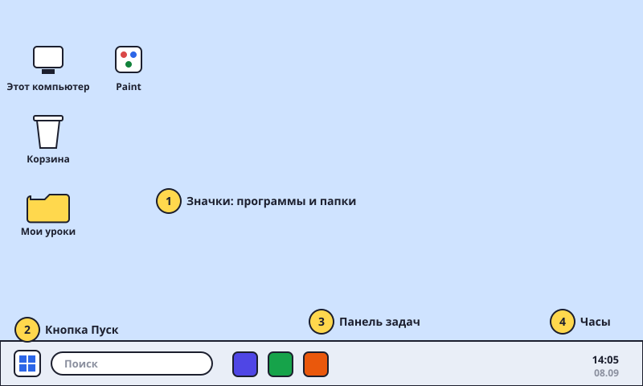

Включаем компьютер и смотрим на рабочий стол
Компьютер — это не только сериалы. Сегодня узнаем, что на экране и как это называется.

Шаги
- Нажми кнопку питания. На ней нарисован кружок с чёрточкой ⏻. На ноутбуке она обычно над клавиатурой, на большом компьютере — на системном блоке (коробке).
- Подожди. Компьютер «просыпается» примерно минуту. Не нажимай кнопку ещё раз — иначе он выключится обратно.
- Войди. Если просят пароль или ПИН-код — введи его и нажми Enter. Пароль спроси у родителей.
- Вот рабочий стол. Это большая картинка на весь экран. На ней лежат маленькие картинки — значки (иконки). Каждый значок — это программа или папка.
- Внизу — панель задач. Полоска внизу экрана. Слева на ней кнопка Пуск (значок Windows ⊞), справа — часы, дата, громкость 🔊 и Wi-Fi.
- Выключаем правильно. Нажми Пуск → значок питания ⏻ → «Завершение работы». Никогда не выдёргивай шнур и не держи кнопку — компьютер может «заболеть» и потерять файлы.
Попробуй сам: найди на рабочем столе три значка и скажи, как они называются. Найди часы. Найди кнопку Пуск.
Рабочий стол — как твоя парта. Значки — как тетрадки и учебники, которые на ней лежат.